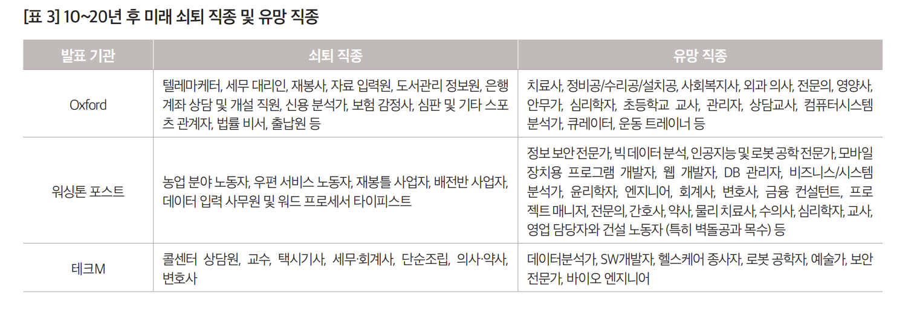
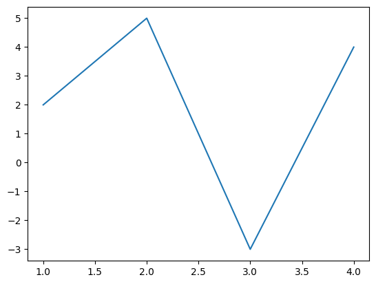

a=1
a11. 코딩테스트- 과거: 개념들을 배우고, 활용을 잘하면 코딩을 잘하는 것이다.
개념1 – 숫자의 저장 및 계산
a=1
a1b=2
b2a+b3개념2 – 문자의 저장 및 계산
a = '이재명'b = '대통령'a+b'이재명대통령'a*2'이재명이재명'b*2'대통령대통령'(a+b)*2'이재명대통령이재명대통령'개념3 – 숫자의 문자화, 문자의 숫자화 (형태변환 )
a = 2025
a2025a*24050a = str(a)
a # 문자같은데?'2025'a*2 # 문자'20252025'개념4 – replace (저장된 타입이 문자일 경우 쓸 수 있는 특별한 기능)
s = 'abc'
s'abc's.replace('b','B')'aBc'개념5 – 리스트 = “숫자, 문자를 여러개 남을 수 있는 그릇”
x = [1,2,'a',3]
x[1, 2, 'a', 3]x[0]*22x[1]*24x[2]*2'aa'x[3]*26개념6 – 리스트의 원소 추가
(예시1)
x = [1,2,'a',3]
x[1, 2, 'a', 3]x.append('b')x[1, 2, 'a', 3, 'b'](예시2)
x = []
x[]x.append(1)
x[1]x.append(2)
x[1, 2](예시3)
x=[]
x[]아래의 코드를 3번실행해보자.
x.append(1)
x.append(2)x에는 뭐가 있을까?
개념7 – for문 (리스트와 같은 iterable객체의 원소를 반복하여 호출하는 테크닉)
(예시1)
x = [1,2,'a',3]
y = []for xi in x:
y.append(xi)y[1, 2, 'a', 3](예시2)
x = [1,2,'a',3]
y = []for xi in x:
y.append(xi*2)y[2, 4, 'aa', 6]문제1 – yyyy/mm/dd 타입을 yyyy-mm-dd 타입으로 변환하기
아래와 같은 리스트가 있다.
year = ['2022/09/21','2022/10/30','2022/12/25','2023/01/01','2023/01/31','2023/03/20']
year['2022/09/21',
'2022/10/30',
'2022/12/25',
'2023/01/01',
'2023/01/31',
'2023/03/20']날짜를 아래와 같은 형식으로 바꾸는 코드를 제시하라.
['2022-09-21','2022-10-30','2022-12-25','2023-01-01','2023-01-31','2023-03-20']['2022-09-21',
'2022-10-30',
'2022-12-25',
'2023-01-01',
'2023-01-31',
'2023-03-20'](풀이) – 해보세요
개념8 – 문자열들로 이루어진 리스트의 원소를 이어주는 테크닉 (join)
x = ['2022','01','31']
x['2022', '01', '31']x[0]+'-'+x[1]+'-'+x[2]'2022-01-31''-'.join(x) # '-'를 이용하여 x의 각 원소를 이어라'2022-01-31'개념9 – 문자열을 특정기호를 기준으로 분리하여 리스트로 만들기
(예시1)
y = '2022-01-31'
y'2022-01-31'y.split('-')['2022', '01', '31'](예시2)
y'2022-01-31'z = y.split('-')
z['2022', '01', '31']'-'.join(z)'2022-01-31'문제2 – 기차만들기
아래의 특수문자를 이용하여
b = '■'
b'■'다음과 같은 기차를 만들어보자.
'■-■-■-■-■---■-■-■-■-■---■-■-■-■-■''■-■-■-■-■---■-■-■-■-■---■-■-■-■-■'(풀이)
개념10 – 리스트안의 리스트 (원소로 리스트를 가지는 리스트)
x = [1,2]
y = [3,4,5]
lst = [x,y]lst[0][1, 2]lst[0][0]1lst[0][1]2lst[1][3, 4, 5]lst[1][0]3lst[1][1]4lst[1][2]5개념11 – 함수
def f(x):
y = x*3
return y f(1)3f('a')'aaa'문제3 – 2021 카카오 채용연계형 인턴쉽 기출문제
출처: https://school.programmers.co.kr/learn/courses/30/lessons/81301?language=ruby

네오와 프로도가 숫자놀이를 하고 있습니다. 네오가 프로도에게 숫자를 건넬때 일부 자릿수를 영단어로 바꾼 카드를 건네주면 프로도는 원래 숫자를 찾는게임입니다. 다음은 숫자의 일부 자릿수를 영단어로 바꾸는 예시입니다.
1478 --> "one4seveneight"
234567 --> "23four5six7"
10203 --> "1zerotwozero3"이렇게 숫자의 일부 자릿수가 영단어로 바뀌어졌거나, 혹은 바뀌지 않고 그대로인 문자열 s가 매개변수로 주어집니다. s가 의미하는 원래 숫자를 return 하도록 solution 함수를 완성해주세요.
참고로 각 숫자에 대응되는 영단어는 다음 표와 같습니다.
| 숫자 | 영단어 |
|---|---|
| 0 | zero |
| 1 | one |
| 2 | two |
| 3 | three |
| 4 | four |
| 5 | five |
| 6 | six |
| 7 | seven |
| 8 | eight |
| 9 | nine |
- 제한사항
- 입출력 예
| s | result |
|---|---|
| “one4seveneight” | 1478 |
| “23four5six7” | 234567 |
| “2three45sixseven” | 234567 |
| “123” | 123 |
- 입출력 예 설명
(풀이)
hint 아래의 리스트를 활용해보세요
x = [
['zero', '0'],
['one', '1'],
['two', '2'],
['three', '3'],
['four', '4'],
['five', '5'],
['six', '6'],
['seven', '7'],
['eight', '8'],
['nine', '9']
]
x[['zero', '0'],
['one', '1'],
['two', '2'],
['three', '3'],
['four', '4'],
['five', '5'],
['six', '6'],
['seven', '7'],
['eight', '8'],
['nine', '9']]2. 코딩테스트의 위기실습1 – ChatGPT를 켜고 “2021 카카오 채용연계형 인턴쉽 기출문제”를 풀어달라고 부탁해보자.
생각해볼점1 – 아래의 유튜브를 시청하고 (5:12 - 6:28 까지만 보면 됩니당) 본인의 생각을 정리해보자.
https://www.youtube.com/watch?v=VpOrYvq7ruk&t=434s
생각해볼점2 – 반발
실습2 – 세종대왕의 맥북프로 던짐 사건을 재현해보자.
생각해볼점3 – GPT가 풀지 못하는 문제에 집중해야 할까?
제 생각 – 활용해야 합니다.
(옛날상식)

인공지능시대의 유망직종과 쇠퇴직종 <출처: 인공지능 기술 발전이 가져올 미래 사회 변화 (2015)>
(상식의무너짐)
http://www.aifnlife.co.kr/news/articleView.html?idxno=13100

복습 – AI시대에 LLM모형을 활용하는 올바른 프로그래머의 두 가지 선택
왼쪽길과 오른쪽길의 공통점: 최근 LLM 기술의 동향을 파악하는 것이 매우 중요
3. Perplexity를 무시할 수 없는 이유 (RAG)실습1 – Perplexity를 켜고 “세종대왕의 맥북프로 던짐 사건”에 대하여 물어보자.
실습2 – Perplexity를 켜고 “최규빈 교수 연구실 전화번호 좀 알려줘” 를 질문하자, 동일한 질문을 ChatGPT에게 해보자.
실습3 – Perplexity를 켜고 “최규빈 교수가 R수업을 한 적 있는지 물어보자” 를 질문하자, 동일한 질문을 ChatGPT에게 해보자.
실습4 – 구글AI모드를 켜고 실습해보자.
4. 틈새시장을 공략한 Cursor (IDE통합)아래의 코드가 있다.
import matplotlib.pyplot as plt
x = [1,2,3,4]
y = [2,5,-3,4]
plt.plot(x,y)
그림의 제목을 “Figure: Line Plot” 이라고 붙이고 싶어서 아래의 코드를 실행했다.
plt.plot(x,y,title="Figure: Line Plot")--------------------------------------------------------------------------- AttributeError Traceback (most recent call last) Cell In[64], line 1 ----> 1 plt.plot(x,y,title="Figure: Line Plot") File ~/Library/CloudStorage/Dropbox/07-sld/2025-09-07-ChatGPT와파이썬/.venv/lib/python3.14/site-packages/matplotlib/pyplot.py:3838, in plot(scalex, scaley, data, *args, **kwargs) 3830 @_copy_docstring_and_deprecators(Axes.plot) 3831 def plot( 3832 *args: float | ArrayLike | str, (...) 3836 **kwargs, 3837 ) -> list[Line2D]: -> 3838 return gca().plot( 3839 *args, 3840 scalex=scalex, 3841 scaley=scaley, 3842 **({"data": data} if data is not None else {}), 3843 **kwargs, 3844 ) File ~/Library/CloudStorage/Dropbox/07-sld/2025-09-07-ChatGPT와파이썬/.venv/lib/python3.14/site-packages/matplotlib/axes/_axes.py:1777, in Axes.plot(self, scalex, scaley, data, *args, **kwargs) 1534 """ 1535 Plot y versus x as lines and/or markers. 1536 (...) 1774 (``'green'``) or hex strings (``'#008000'``). 1775 """ 1776 kwargs = cbook.normalize_kwargs(kwargs, mlines.Line2D) -> 1777 lines = [*self._get_lines(self, *args, data=data, **kwargs)] 1778 for line in lines: 1779 self.add_line(line) File ~/Library/CloudStorage/Dropbox/07-sld/2025-09-07-ChatGPT와파이썬/.venv/lib/python3.14/site-packages/matplotlib/axes/_base.py:297, in _process_plot_var_args.__call__(self, axes, data, return_kwargs, *args, **kwargs) 295 this += args[0], 296 args = args[1:] --> 297 yield from self._plot_args( 298 axes, this, kwargs, ambiguous_fmt_datakey=ambiguous_fmt_datakey, 299 return_kwargs=return_kwargs 300 ) File ~/Library/CloudStorage/Dropbox/07-sld/2025-09-07-ChatGPT와파이썬/.venv/lib/python3.14/site-packages/matplotlib/axes/_base.py:546, in _process_plot_var_args._plot_args(self, axes, tup, kwargs, return_kwargs, ambiguous_fmt_datakey) 544 return list(result) 545 else: --> 546 return [l[0] for l in result] File ~/Library/CloudStorage/Dropbox/07-sld/2025-09-07-ChatGPT와파이썬/.venv/lib/python3.14/site-packages/matplotlib/axes/_base.py:539, in <genexpr>(.0) 534 else: 535 raise ValueError( 536 f"label must be scalar or have the same length as the input " 537 f"data, but found {len(label)} for {n_datasets} datasets.") --> 539 result = (make_artist(axes, x[:, j % ncx], y[:, j % ncy], kw, 540 {**kwargs, 'label': label}) 541 for j, label in enumerate(labels)) 543 if return_kwargs: 544 return list(result) File ~/Library/CloudStorage/Dropbox/07-sld/2025-09-07-ChatGPT와파이썬/.venv/lib/python3.14/site-packages/matplotlib/axes/_base.py:338, in _process_plot_var_args._make_line(self, axes, x, y, kw, kwargs) 336 kw = {**kw, **kwargs} # Don't modify the original kw. 337 self._setdefaults(self._getdefaults(kw), kw) --> 338 seg = mlines.Line2D(x, y, **kw) 339 return seg, kw File ~/Library/CloudStorage/Dropbox/07-sld/2025-09-07-ChatGPT와파이썬/.venv/lib/python3.14/site-packages/matplotlib/lines.py:421, in Line2D.__init__(self, xdata, ydata, linewidth, linestyle, color, gapcolor, marker, markersize, markeredgewidth, markeredgecolor, markerfacecolor, markerfacecoloralt, fillstyle, antialiased, dash_capstyle, solid_capstyle, dash_joinstyle, solid_joinstyle, pickradius, drawstyle, markevery, **kwargs) 417 self.set_markeredgewidth(markeredgewidth) 419 # update kwargs before updating data to give the caller a 420 # chance to init axes (and hence unit support) --> 421 self._internal_update(kwargs) 422 self.pickradius = pickradius 423 self.ind_offset = 0 File ~/Library/CloudStorage/Dropbox/07-sld/2025-09-07-ChatGPT와파이썬/.venv/lib/python3.14/site-packages/matplotlib/artist.py:1233, in Artist._internal_update(self, kwargs) 1226 def _internal_update(self, kwargs): 1227 """ 1228 Update artist properties without prenormalizing them, but generating 1229 errors as if calling `set`. 1230 1231 The lack of prenormalization is to maintain backcompatibility. 1232 """ -> 1233 return self._update_props( 1234 kwargs, "{cls.__name__}.set() got an unexpected keyword argument " 1235 "{prop_name!r}") File ~/Library/CloudStorage/Dropbox/07-sld/2025-09-07-ChatGPT와파이썬/.venv/lib/python3.14/site-packages/matplotlib/artist.py:1206, in Artist._update_props(self, props, errfmt) 1204 func = getattr(self, f"set_{k}", None) 1205 if not callable(func): -> 1206 raise AttributeError( 1207 errfmt.format(cls=type(self), prop_name=k), 1208 name=k) 1209 ret.append(func(v)) 1210 if ret: AttributeError: Line2D.set() got an unexpected keyword argument 'title'
에러를 어떻게 하면 좋을까?
실습1 – ChatGPT에게 물어서 대안을 물어보고 해결하기
plt.plot(x,y,title="Figure: Line Plot") # 이 코드를 수정하라--------------------------------------------------------------------------- AttributeError Traceback (most recent call last) Cell In[65], line 1 ----> 1 plt.plot(x,y,title="Figure: Line Plot") # 이 코드를 수정하라 File ~/Library/CloudStorage/Dropbox/07-sld/2025-09-07-ChatGPT와파이썬/.venv/lib/python3.14/site-packages/matplotlib/pyplot.py:3838, in plot(scalex, scaley, data, *args, **kwargs) 3830 @_copy_docstring_and_deprecators(Axes.plot) 3831 def plot( 3832 *args: float | ArrayLike | str, (...) 3836 **kwargs, 3837 ) -> list[Line2D]: -> 3838 return gca().plot( 3839 *args, 3840 scalex=scalex, 3841 scaley=scaley, 3842 **({"data": data} if data is not None else {}), 3843 **kwargs, 3844 ) File ~/Library/CloudStorage/Dropbox/07-sld/2025-09-07-ChatGPT와파이썬/.venv/lib/python3.14/site-packages/matplotlib/axes/_axes.py:1777, in Axes.plot(self, scalex, scaley, data, *args, **kwargs) 1534 """ 1535 Plot y versus x as lines and/or markers. 1536 (...) 1774 (``'green'``) or hex strings (``'#008000'``). 1775 """ 1776 kwargs = cbook.normalize_kwargs(kwargs, mlines.Line2D) -> 1777 lines = [*self._get_lines(self, *args, data=data, **kwargs)] 1778 for line in lines: 1779 self.add_line(line) File ~/Library/CloudStorage/Dropbox/07-sld/2025-09-07-ChatGPT와파이썬/.venv/lib/python3.14/site-packages/matplotlib/axes/_base.py:297, in _process_plot_var_args.__call__(self, axes, data, return_kwargs, *args, **kwargs) 295 this += args[0], 296 args = args[1:] --> 297 yield from self._plot_args( 298 axes, this, kwargs, ambiguous_fmt_datakey=ambiguous_fmt_datakey, 299 return_kwargs=return_kwargs 300 ) File ~/Library/CloudStorage/Dropbox/07-sld/2025-09-07-ChatGPT와파이썬/.venv/lib/python3.14/site-packages/matplotlib/axes/_base.py:546, in _process_plot_var_args._plot_args(self, axes, tup, kwargs, return_kwargs, ambiguous_fmt_datakey) 544 return list(result) 545 else: --> 546 return [l[0] for l in result] File ~/Library/CloudStorage/Dropbox/07-sld/2025-09-07-ChatGPT와파이썬/.venv/lib/python3.14/site-packages/matplotlib/axes/_base.py:539, in <genexpr>(.0) 534 else: 535 raise ValueError( 536 f"label must be scalar or have the same length as the input " 537 f"data, but found {len(label)} for {n_datasets} datasets.") --> 539 result = (make_artist(axes, x[:, j % ncx], y[:, j % ncy], kw, 540 {**kwargs, 'label': label}) 541 for j, label in enumerate(labels)) 543 if return_kwargs: 544 return list(result) File ~/Library/CloudStorage/Dropbox/07-sld/2025-09-07-ChatGPT와파이썬/.venv/lib/python3.14/site-packages/matplotlib/axes/_base.py:338, in _process_plot_var_args._make_line(self, axes, x, y, kw, kwargs) 336 kw = {**kw, **kwargs} # Don't modify the original kw. 337 self._setdefaults(self._getdefaults(kw), kw) --> 338 seg = mlines.Line2D(x, y, **kw) 339 return seg, kw File ~/Library/CloudStorage/Dropbox/07-sld/2025-09-07-ChatGPT와파이썬/.venv/lib/python3.14/site-packages/matplotlib/lines.py:421, in Line2D.__init__(self, xdata, ydata, linewidth, linestyle, color, gapcolor, marker, markersize, markeredgewidth, markeredgecolor, markerfacecolor, markerfacecoloralt, fillstyle, antialiased, dash_capstyle, solid_capstyle, dash_joinstyle, solid_joinstyle, pickradius, drawstyle, markevery, **kwargs) 417 self.set_markeredgewidth(markeredgewidth) 419 # update kwargs before updating data to give the caller a 420 # chance to init axes (and hence unit support) --> 421 self._internal_update(kwargs) 422 self.pickradius = pickradius 423 self.ind_offset = 0 File ~/Library/CloudStorage/Dropbox/07-sld/2025-09-07-ChatGPT와파이썬/.venv/lib/python3.14/site-packages/matplotlib/artist.py:1233, in Artist._internal_update(self, kwargs) 1226 def _internal_update(self, kwargs): 1227 """ 1228 Update artist properties without prenormalizing them, but generating 1229 errors as if calling `set`. 1230 1231 The lack of prenormalization is to maintain backcompatibility. 1232 """ -> 1233 return self._update_props( 1234 kwargs, "{cls.__name__}.set() got an unexpected keyword argument " 1235 "{prop_name!r}") File ~/Library/CloudStorage/Dropbox/07-sld/2025-09-07-ChatGPT와파이썬/.venv/lib/python3.14/site-packages/matplotlib/artist.py:1206, in Artist._update_props(self, props, errfmt) 1204 func = getattr(self, f"set_{k}", None) 1205 if not callable(func): -> 1206 raise AttributeError( 1207 errfmt.format(cls=type(self), prop_name=k), 1208 name=k) 1209 ret.append(func(v)) 1210 if ret: AttributeError: Line2D.set() got an unexpected keyword argument 'title'
실습2 – 코랩에서 Explain error를 활용하여 해결하기
plt.plot(x,y,title="Figure: Line Plot") # 이 코드를 수정하라--------------------------------------------------------------------------- AttributeError Traceback (most recent call last) Cell In[66], line 1 ----> 1 plt.plot(x,y,title="Figure: Line Plot") # 이 코드를 수정하라 File ~/Library/CloudStorage/Dropbox/07-sld/2025-09-07-ChatGPT와파이썬/.venv/lib/python3.14/site-packages/matplotlib/pyplot.py:3838, in plot(scalex, scaley, data, *args, **kwargs) 3830 @_copy_docstring_and_deprecators(Axes.plot) 3831 def plot( 3832 *args: float | ArrayLike | str, (...) 3836 **kwargs, 3837 ) -> list[Line2D]: -> 3838 return gca().plot( 3839 *args, 3840 scalex=scalex, 3841 scaley=scaley, 3842 **({"data": data} if data is not None else {}), 3843 **kwargs, 3844 ) File ~/Library/CloudStorage/Dropbox/07-sld/2025-09-07-ChatGPT와파이썬/.venv/lib/python3.14/site-packages/matplotlib/axes/_axes.py:1777, in Axes.plot(self, scalex, scaley, data, *args, **kwargs) 1534 """ 1535 Plot y versus x as lines and/or markers. 1536 (...) 1774 (``'green'``) or hex strings (``'#008000'``). 1775 """ 1776 kwargs = cbook.normalize_kwargs(kwargs, mlines.Line2D) -> 1777 lines = [*self._get_lines(self, *args, data=data, **kwargs)] 1778 for line in lines: 1779 self.add_line(line) File ~/Library/CloudStorage/Dropbox/07-sld/2025-09-07-ChatGPT와파이썬/.venv/lib/python3.14/site-packages/matplotlib/axes/_base.py:297, in _process_plot_var_args.__call__(self, axes, data, return_kwargs, *args, **kwargs) 295 this += args[0], 296 args = args[1:] --> 297 yield from self._plot_args( 298 axes, this, kwargs, ambiguous_fmt_datakey=ambiguous_fmt_datakey, 299 return_kwargs=return_kwargs 300 ) File ~/Library/CloudStorage/Dropbox/07-sld/2025-09-07-ChatGPT와파이썬/.venv/lib/python3.14/site-packages/matplotlib/axes/_base.py:546, in _process_plot_var_args._plot_args(self, axes, tup, kwargs, return_kwargs, ambiguous_fmt_datakey) 544 return list(result) 545 else: --> 546 return [l[0] for l in result] File ~/Library/CloudStorage/Dropbox/07-sld/2025-09-07-ChatGPT와파이썬/.venv/lib/python3.14/site-packages/matplotlib/axes/_base.py:539, in <genexpr>(.0) 534 else: 535 raise ValueError( 536 f"label must be scalar or have the same length as the input " 537 f"data, but found {len(label)} for {n_datasets} datasets.") --> 539 result = (make_artist(axes, x[:, j % ncx], y[:, j % ncy], kw, 540 {**kwargs, 'label': label}) 541 for j, label in enumerate(labels)) 543 if return_kwargs: 544 return list(result) File ~/Library/CloudStorage/Dropbox/07-sld/2025-09-07-ChatGPT와파이썬/.venv/lib/python3.14/site-packages/matplotlib/axes/_base.py:338, in _process_plot_var_args._make_line(self, axes, x, y, kw, kwargs) 336 kw = {**kw, **kwargs} # Don't modify the original kw. 337 self._setdefaults(self._getdefaults(kw), kw) --> 338 seg = mlines.Line2D(x, y, **kw) 339 return seg, kw File ~/Library/CloudStorage/Dropbox/07-sld/2025-09-07-ChatGPT와파이썬/.venv/lib/python3.14/site-packages/matplotlib/lines.py:421, in Line2D.__init__(self, xdata, ydata, linewidth, linestyle, color, gapcolor, marker, markersize, markeredgewidth, markeredgecolor, markerfacecolor, markerfacecoloralt, fillstyle, antialiased, dash_capstyle, solid_capstyle, dash_joinstyle, solid_joinstyle, pickradius, drawstyle, markevery, **kwargs) 417 self.set_markeredgewidth(markeredgewidth) 419 # update kwargs before updating data to give the caller a 420 # chance to init axes (and hence unit support) --> 421 self._internal_update(kwargs) 422 self.pickradius = pickradius 423 self.ind_offset = 0 File ~/Library/CloudStorage/Dropbox/07-sld/2025-09-07-ChatGPT와파이썬/.venv/lib/python3.14/site-packages/matplotlib/artist.py:1233, in Artist._internal_update(self, kwargs) 1226 def _internal_update(self, kwargs): 1227 """ 1228 Update artist properties without prenormalizing them, but generating 1229 errors as if calling `set`. 1230 1231 The lack of prenormalization is to maintain backcompatibility. 1232 """ -> 1233 return self._update_props( 1234 kwargs, "{cls.__name__}.set() got an unexpected keyword argument " 1235 "{prop_name!r}") File ~/Library/CloudStorage/Dropbox/07-sld/2025-09-07-ChatGPT와파이썬/.venv/lib/python3.14/site-packages/matplotlib/artist.py:1206, in Artist._update_props(self, props, errfmt) 1204 func = getattr(self, f"set_{k}", None) 1205 if not callable(func): -> 1206 raise AttributeError( 1207 errfmt.format(cls=type(self), prop_name=k), 1208 name=k) 1209 ret.append(func(v)) 1210 if ret: AttributeError: Line2D.set() got an unexpected keyword argument 'title'
생각해볼점1 – 무엇이 더 편리한가?
실습3 – 코랩에서 toggle gemini를 활용하여 scatter plot을 하나 그려라.
가능하면 의미있는 예제를 그려보도록 하자. 예를들면 온도와 아이스아메리카노 판매량과 같은
실습4 – 실습3에서 만든 예제를 설명하는 문서를 만들어 보도록 하자.
실습5 – 머신러닝 모형을 이용하여 산점도에 적당한 추세선을 추가해보도록 하자.
실습6 – 머신러닝 모형을이용하여 간단한 예측을 해보도록 하자.
실습7 – 모형과 코드를 설명하는 문서를 작성해보자.
생각해볼점2 – 커서는 모델에 대한 기여는 없다. 그래도 커서는 유용한가? 커서가 혁신이라고 생각하는가?
생각해볼점3 – 커서에 얼만큼의 돈을 지불할 수 있을까? (ChatGTP보다 더 지불할 의향이 있는가?)
5. Claude의 반격1 (아티팩트)실습1 – 클로드에 접속하고 강의노트를 업로드하여 5개의 OX퀴즈를 만들자.
실습2 – 실습1에서 만든 OX퀴즈를 플래시카드앱으로 만들자.
실습3 – 만든 앱을 배포하자.
실습4 – 랜덤으로 문제를 섞는 기능을 추가해보자.
실습5 – 툴팁기능을 추가해보자.
실습6 – 문제 히스토리 기능을 추가해보자.
6. Claude의 반격2 (MCP)이건 돈을 내야해서요.. 실습하긴 어렵습니다.
7. Claude의 반격3 (clude code)실습1 – 파이썬을 이용해 아래의 주소에 접속하여 자료를 가져오고 압축을 풀어라. (설마 안배워서 모른다고 하진 않겠죠?)
실습2 – 제미나이cli에 접속하라.
실습3 – Downloads폴더의 내용을 파악하라.
실습4 – AI.txt를 찾고 문항과 정답을 각각 파일별로 분리하는 파이썬 코드를 작성하라.
실습5 – 제미나이cli를 이용하여 이미지 파일들의 이름을 바꿔라.
실습6 – 폴더 image를 별도로 만들고, 모든 이미지 파일을 그 폴더에 복사하는 파이썬 코드를 작성하라.
실습7 – 22명의 학생들에 대한 출석점수, 중간고사점수, 기말고사 점수가 저장되어있는 파일을 파악하라. 그것을 바탕으로 모든 학생들의 점수를 정리한 엑셀파일 scores.csv를 만들어라.
실습8 – 출석 20%, 중간고사 30%, 기말고사 50% 의 가중치를 반영하여 최종스코어를 계산하라.
8. 구글의 반격 (노트북LM)pass